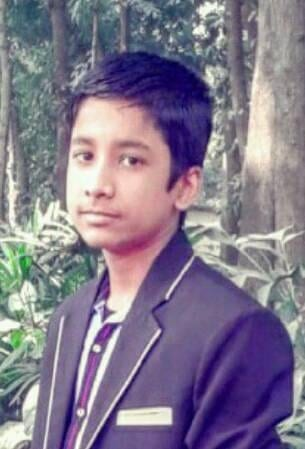

Curriculum Vitae
Of
Md:Golam Nobi

- Father's name:Md:Abdul Kader
- Mather's name:Firuza akter
- Date Of Birth:6june,2004
- permanent address:273,khilbaritek purbo para vatara Dhaka 1212
- marital status:single
- Nationality:Bangladeshi
- Religion:Islam
- Blodd group:A-positive
- SSC on Gulshan Model School and Collage(2020)
- HSC on Baf Sahin Collage Dhaka(1st year runing)
Educational experience:
- Language skil:Fluent in Bangla ,English and Hindi.Excellent at written and spoken English
- Interest:Reading books and newspaper,watching movie,travelling,plsying cricket